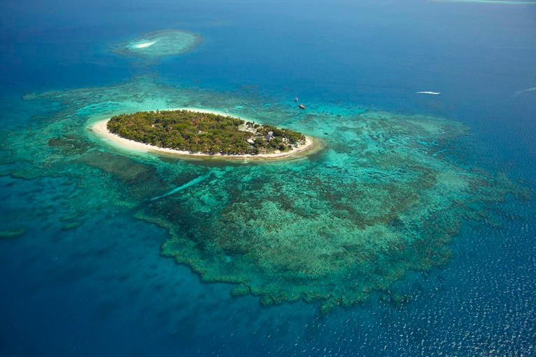

This page is an archive of parts of our planet that are disappearing due to climate change.
Islands
The cryosphere, the frozen water on Earth's surface, is melting at unprecedented rates. As a direct result, sea levels are predicted to rise by 1.1 meters by the 2100. If sea level continues to rise at the current rates, nations of people will be forcibly displaced from their homes and entire cultures will be largely lost.
-
Maldives
The Maldives, a collection of 1190 islands in the Indian Ocean, is the flattest country on the planet. With 80% of the country less than 1m above sea level, the Maldives are extremely vulnerable to rising sea levels. Although the Maldives are only responsible for 0.0003% of global emissions, they are already suffering from the servere impact of climate change due to the location and size of the islands. Currently, 90% of the islands have experienced flooding, 97% have experienced shoreline erosion and 64% have experienced serial erosion.
-
Tuvalu

Tuvalu is a collection of 9 small islands in the Pacific ocean, located midway between Hawaii and Australia. Positioned only 3m above sea level and only 20m across (at its narrowest region), Tuvalu is at high risk of submergence due to rises in sea level and heavy coastal erosion from increasingly intense weather patterns. In addition to frequent flooding, Tuvalu experiences extreme temperatures as a result of green house gas emissions from industrialised nations. Many locals predict that their land will be fully submerged and uninhabitable within the next 50 years. While Australia has offered Tuvuluans citizenship, it is contigent on Tuvuluans giving up their fishing and maritime rights. The Tuvaluan government has rejected this as imperialist behavior and remain committed to preserving their land, culture and sovereignity.